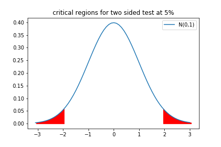
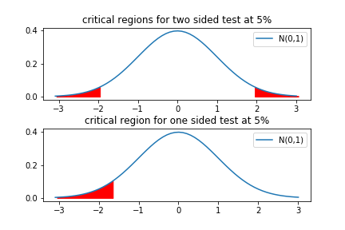
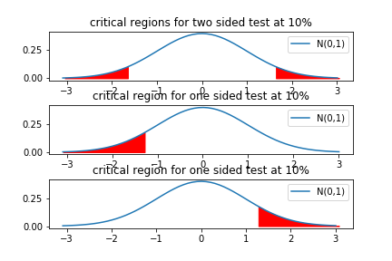
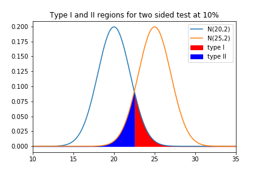
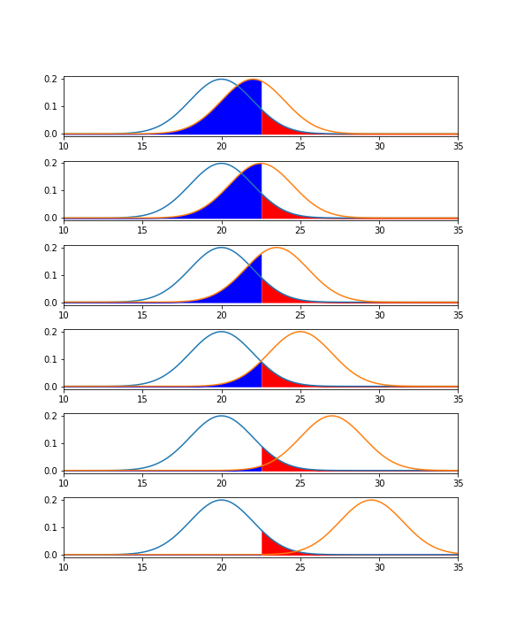

This is another part of statistical inference.
Last week we estimated or inferred the values of population parameters (mean and variance) from statistical data.
We looked at confidence intervals - we estimated or inferred the range of values of population parameters with a certain degree of probability or confidence
This week we look at some methods to make decisions based on these estimates.
Example
Suppose we'd been following some population over a period of time and found it to be normally distributed with mean $\mu$ and standard deviation $\sigma$. Now, for some reason we have a suspicion that the the mean has changed in some way.
We want to formulate some test that would allow us to make an informed decision whether our suspicions were correct or not. How should we attack this?
We will draw a random sample $X_1, X_2, \ldots, X_n$ and calculate the value of the sample mean, $\bar{x}$, for the values we've drawn,$x_1, x_2, \ldots, x_n$.
We then look at the difference between the sample mean $\bar{x}$ and $\mu$.
The problem here is what is large and what is small?
We'd expect large and small to related to
We can use essentially the same methods we used to construct confidence intervals to try and quantify whether the difference between the sample mean and the presumed population mean is significant.
Let us assume that the population mean is $\mu$,then we consider the distribution of the sample statistic $\bar{X}$ under this assumption.
Remember we know that historically the population was
so we are assuming that the random sample is drawn from this distribution.
We have shown that $\bar{X}$ should be an unbiased estimator for $\text{E}[\bar{X}] = \text{E}[X] = \mu$.
As the random sample should be drawn from $N(\mu, \sigma)$ the sample mean $\bar{X}$ should be distributed $N(\mu, \sigma / \sqrt{N})$.
Then we $\textbf{standardize}$ our variable
$$ \frac{\bar{X}-\mu}{\sigma/\sqrt{N}} \sim N(0,1) $$ where $\sim$ means is distributed as.
When we have taken our particular sample of $X_1, X_2, \ldots, X_n$ we have $x_1, x_2, \ldots, x_n$ and can calculate $\bar{x}$.
The particular standardized value $$ \frac{\bar{x}-\mu}{\sigma/\sqrt{N}} $$ should have come from the standard normal distribution.
We could say that we'll not reject our value if it is a value that could be drawn from a standard normal distribution with some probability. So for instance 95% of the time a random value drawn from a standard normal distribution will have a value between -1.96 and 1.96.
zclower = stats.norm.ppf(0.025)
zcupper = stats.norm.ppf(0.975)
print(zclower, zcupper)
-1.95996398454 1.95996398454
In other words we'd reject our idea if the value we got was only 5% likely to have come from our assumed distribution. To get this value we look for the 2.5% quantile at the bottom, and 97.5% quantile at the top of the distribution.
Lets look at a plot of the regions that don't satisfy this:

example
A machine produces components whose lengths should be distributed Normally with mean 0.160 cm and standard deviation 0.012 cm.
A sample of 100 is drawn and the sample mean computed as 0.157 cm.
We are given that $\mu=0.160$, $\sigma=0.012$, $\bar{x}=0.157$ and $N=100$.
$$ \frac{\bar{x}-\mu}{\sigma/\sqrt{N}} = \frac{0.157-0.160}{0.012/\sqrt{100}} = -2.5 $$
there is another slightly different procedure that can be followed: we run the data and give the critical significance level at which we would reject our hypothesis.
example
if we look at our last example again
$$ \frac{\bar{x}-\mu}{\sigma/\sqrt{N}} = \frac{0.157-0.160}{0.012/\sqrt{100}} = -2.5 $$
our test statistic came out at -2.5. The probability of getting this value from a standard normal distribution is $\Phi(-2.5)$
stats.norm.cdf(-2.5)
0.0062096653257761323
so there is only a 0.6% chance of getting a value of -2.5 (or less) from a standard normal distribution.
We'd have rejected this if the significance level was set at twice this value (because we are doing a two sided test we have the same amount of probability density at the top as the bottom).
So the $P$ value is
2*stats.norm.cdf(-2.5)
0.012419330651552265
We'd reject this value at a 1.2% significance level (but we'd accept at a 1% level).
We've tended to use a symmetric criteria, or a so called two-sided test (our confidence regions were the same), i.e the value of $\mid \bar{x} - \mu \mid$ is what we've been examining above.
We might have a suspicion that the mean had decreased (the average weight of cakes in our favourite bakery/cafe has decreased for instance)...
In this case we would only be interested in whether the standardized value was too small to be likely have come from our hypthesized distribution.

In both cases there is a total of 5% of the probability density in the critical region, but in the one sided case, we are only interested in the lower range (if cakes have really got bigger, that is fine).
We could be interested in an upper bound instead, which would be the same as the lower, but at the top...

example
A machine produces components whose lengths should be distributed Normally with mean 0.160 cm and standard deviation 0.012 cm.
A sample of 100 is drawn and the sample mean computed as 0.157 cm.
We are given that $\mu=0.160$, $\sigma=0.012$, $\bar{x}=0.157$ and $N=100$.
stats.norm.ppf(0.01)
-2.3263478740408408
as is often the case in science, it is relatively easy to prove something is false - in this case if the data fall in the rejection region we can say with a known confidence that it is unlikely to come from our assumed distribution.
However, the case where the data is not in the critical region is harder to be certain about: We can not argue that it shows that the data does come from our assumed distribution; Just that it is plausible, or there is no evidence that it doesn't.
We don't really accept our hypothesis, we just don't reject it.
normally the above is put a bit more formally.
These are typically written
$H_0$: mean = $\mu$
the null hypothesis is that the mean has value $\mu$
$H_1$: mean $\ne$ $\mu$
the alternative hypothesis is that the mean is not equal to $\mu$, and we'd use a two sided test
or
$H_1$: mean $\lt$ $\mu$
the alternative hypothesis is that the mean is less than $\mu$, and we'd use a one sided test
$H_1$: mean $\gt$ $\mu$
the alternative hypothesis is that the mean is more than $\mu$, and we'd use a one sided test
Testing the mean when the variance is known
All this applies to other population parameters or sample statistics - we just need to use appropriate distributions.
Example
Suppose we'd been following some population over a period of time and found it to be normally distributed with mean $\mu$ and standard deviation $\sigma$. Now, for some reason we have a suspicion that the the mean has changed in some way.
We want to formulate some test that would allow us to make an informed decision whether our suspicions were correct or not. How should we attack this?
All this applies to other population parameters or sample statistics - we just need to use appropriate distributions.
example
A machine produces components whose lengths should be distributed Normally with mean 0.160 cm and standard deviation 0.012 cm.
A sample of 100 is drawn and the sample mean computed as 0.157 cm.
We are given that $\mu=0.160$, $\sigma=0.012$, $\bar{x}=0.157$ and $N=100$.
how does this come about?
$\bar{X} \sim N(\mu, \sigma/ \sqrt{N})$
If $X_i \sim N(\mu,\sigma)$ then we can look at
$\bar{X} = \frac{1}{N}(X_1 + X_2 + \ldots + X_n)$
We saw last week that standard normal distributed random variables have moment generating functions $e^{t^2/2}$.
This is a special case of a normal distribution, $N(\mu, \sigma)$ having moment generating function $$e^{\mu t + \frac{\sigma^2 t^2}{2 }}$$
We also saw that, if $X$ and $Y$ are independent, then $e^{tX}$ and $e^{tY}$ are too. Then we have a new random variable $Z = X + Y$ has a generating function
$$ \begin{align} g_Z(t) & = \text{E[$e^{tZ}$]} = \text{E[$e^{t(X + Y)}$]} \\ & = \text{E[$e^{tX}$]} \text{E[$e^{tY}$]} \\ & = g_X(t) g_Y(t) \end{align} $$
If $X^* = X/N$
$$ g_{X^*}(t) = \text{E[$e^{tX^*}$]} = \text{E[$e^{\frac{tX}{N}}$]} = g_{X}(t/N) $$
So we expect $\bar{X} = \frac{1}{N}(X_1 + \cdots + X_N)$ to have moment generating function
$$ \begin{align} g_{X_1}(t/N) \cdot g_{X_2}(t/N) \cdots g_{X_N}(t/N) & = \big(e^{\mu t/N + \frac{\sigma^2 (t/N)^2}{2 }}\big) \cdots \big( e^{\mu t + \frac{\sigma^2 t^2}{2N }} \big) \\ & = e^{ N\mu t/N + \frac{ N \sigma^2 (t/N)^2}{2 }} \\ & = e^{ \mu t + \frac{ \sigma^2 t^2}{2N }} \end{align} $$
which is the moment generating function of a normal distribution with mean = $\mu$ and standard deviation = $\frac{\sigma}{\sqrt{N}}$.
As the moment generating function fully defines the random variable, this implies that
$$ \bar{X} \sim N(\mu, \frac{\sigma}{\sqrt{N}}) $$
If $X_i$ aren't $\sim N(\mu, \sigma)$ then we can use the Central Limit Theorem as long as $N$ is biggish ($N$ can be smaller the closer the $X_i$ are to being normally distributed themselves).
$$\bar{X} \sim N(\mu, \sigma/ \sqrt{N})$$
then
$$ \frac{\bar{X} - \mu}{\sigma/\sqrt{N}} \sim N(0, 1) $$
we can use the same moment generating technique to show that this transformation is valid
If a random variable $X \sim N(\mu,\sigma/ \sqrt{N})$ then let us consider a random variable $Z = \alpha X + \beta$
$Z$ has moment generating function
$$ \begin{align} \text{E[$e^{tZ}$]} & = \text{E[$e^{t(\alpha X + \beta)}$]} \\ & = e^{t\beta}\text{E[$e^{t\alpha X}$]} \\ & = e^{t\beta} \exp\{\mu \alpha t + \sigma^2 (\alpha t)^2 /2N\} \\ & = \exp\{ ( \beta + \mu \alpha ) t + \sigma^2 \alpha^2 t^2 /2N\ \} \end{align} $$
the last expression is the generating function of a normal distribution with mean = $\beta + \mu \alpha$ and variance $\sigma^2 \alpha^2 / N$.
$\implies Z \sim N(\beta + \mu \alpha, \sigma \alpha)$
$\implies Z \sim N(\beta + \mu \alpha, \sigma \alpha)$
so if we choose the particular $\alpha$ and $\beta$ so that
$$ Z = \frac{X - \mu}{\sigma / \sqrt{N}} $$
given that $X \sim N(\mu,\sigma/ \sqrt{N})$, $Z \sim N(0,1)$, as we want.
You can also prove this by a change of variables and fairly standard calculus, but the moment generating function method is easier (to my mind).
exactly like the confidence interval case, if we do not know the variance we approxiate it with the sample variance. We use the random variable
$$ \frac{\bar{X} - \mu}{S/\sqrt{N}} $$
and test the test statistic
$$ \frac{\bar{x} - \mu}{S/\sqrt{N}} $$
against a t distribution with $(N-1)$ degrees of freedom.
Now we've seen practically how the tests work (and filled in the theory behind some of it) it is important to understand a difficulty that arises - false negatives and false positives.
These two types of error are
these are fairly straightforward, and controllable.
If we look at our rejection region
we can directly see that the probability of getting a false negative is $\alpha$, our significance level. This gives the probability of our random sample just happening to give a value within the rejection region.
In that case why not just take $\alpha$ really small?
these are much harder, often impossible, to quantify.
This is the error that occurs, conventionally with probability $\beta$, that the null hypothesis is accepted when it should be rejected.
In other words our test shows that the test statistic could well have come from the distribution we are testing, but actually comes from another...
Lets consider the case where we think that the sample comes from something $\sim N(20,2)$, but in fact the mean had moved to 25, so really the sample is from $N(25,2)$. When would we make errors?

the two types or error are coloured red and blue.
To show that $\beta(\mu)$ we can plot the same graphs but for different values of $\mu$

As we know the true distribution then we can work out $\beta(\mu)$ in this case. It can be very complicated in general.
definition
The power of a test is $(1-\beta)$
The larger the power the better the test is at distinguishing between the alternative hypotheses.
In general, when preparing a test the aim should be to have both alpha and beta small. Increasing $\alpha$ will decrease $\beta$, so there is a balance between the risks associated with type I and type II errors.
other statistics can also be devised and tested, such as